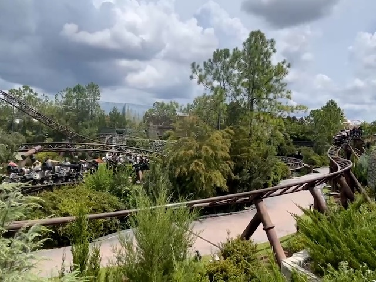
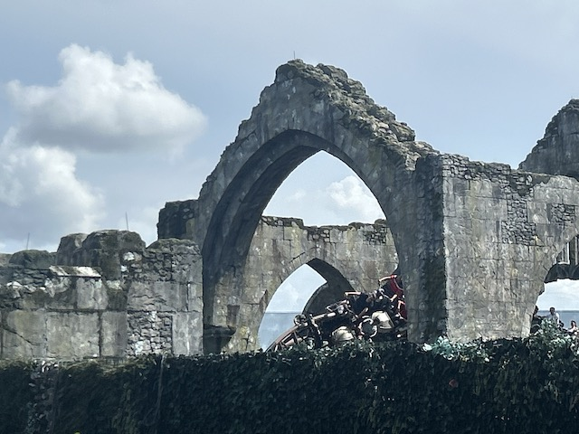
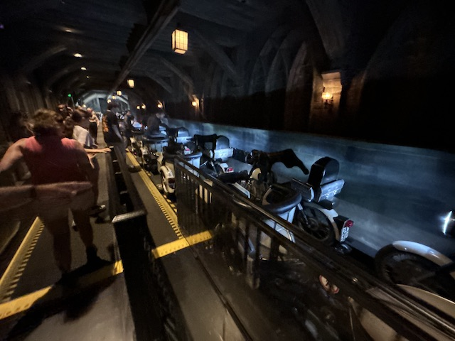
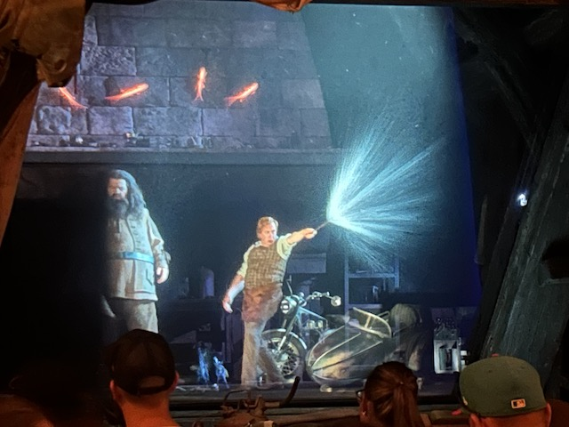
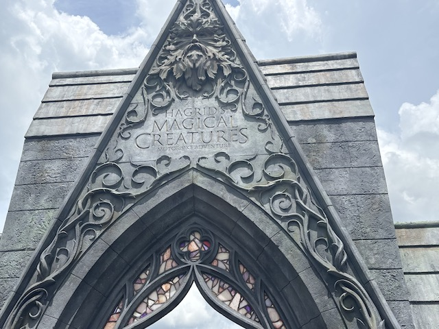

| |
Hagrid's Magical Creatures Motorbike Adventures Review

Today, we'll be reviewing Hagrids Magical Creatures Motorbike Adventures @ Islands of Adventures, within the Universal Orlando Resort. Now that name is too long, so I'll be calling it Hagrids Magical Creatures for the sake of simplicity. This is one of those Intamin Motorbike coasters. And this is NOT an ordinary Motorbike Coaster. No, this is by far the best themed and most elaborate motorbike coaster. To the point where this ride feels like a freaking Disney coaster (if Disney owned Harry Potter). It really is like none of the other motorbike coasters with by far te best layout. Though people do tend to go nuts for this ride, often calling it one of the best coasters in the world. Uh....this may be a great family coaster and the best of its kind. But........ Top 10 coaster? NO!!! Also, since this is built on the gravesite of Dueling Dragons, just wanted to point out that Dueling Dragons > Hagrids Magical Creatures (though Velocicoaster did make up for that mistake). So yeah. Let's ride. After waiting in the WAY TOO LONG LINE, you get in the motorbikes, get the lap bar just right, and away we go. We roll out of the station and around a turn. Hagrid tells us not to mind.....I forget what exactly (I'm not a huge Harry Potter fan. OK?). We stroll by, enjoying the John Williams music, and enjoy the theming when......whoa! First launch! It's not very fast, but hey. It's some speed. We mozy through a couple of S bends, when BAM!!! Second launch! Now the rides really begun! We go through a turn underneath a bridge and go through some turns, admiring all the cool theming and the John Williams Harry Potter music. Go through some more S bends, trying to ignore Hagrid's backseat driving. *Sigh* I know its your ride and all, but please back off with the backseat driving. It genuinely is really annoying (Know from personal experience). We glide into a brake run for a dark ride section. We roll around a turn and see.....one of Hagrid's Magical Creatures. It belts smoke at us as Hagrid tries to tame it. Roll through a couple more turns, and then.....the roller coaster resumes. Launch #3. We head up a hill, over some castle wall, and head into a curved drop. Yeah. This ride really is a ton of fun. We go through a series of banked low to the ground turns. Some over water. Yeah. This is pretty cool. And hey! Launch #4! I'm starting to sense a pattern with this ride! ;) Roll through a couple upward curves and through some dips. We roll into a big trim brake, while Hagrid tells us to not mind Fluffy. Now this, I do remember from the movie. OK. We then go through Launch #5. Gain some speed, dip down through the fog and....head up a spike!? Whoa! Now THIS is different and not what I was expecting. We now fall down the spike and.....BAM!!! Launch #6. Only this time, its backwards! Go through another turn backwards and....into a brake run. I think its time for another dark ride section. Roll through some turns, and Hagrid now tells us that we're tangled in Devil's Snare. Ugh. Just f*cking great. Luckily, Hagrid casts the sunlight spell, and WHOA!!! Drop track! It's only a 10 ft drop. But it catches you off guard and is fun. Plus, this isn't the only coaster I've ridden to incorporate drop track. At the bottom of the drop track, we find a fire element, before we take off and head into Launch #7. We gain some speed and head into an upward turn. Go through some more banked turns and into the brakes. The actual brakes. Sure, we roll by a unicorn, who is a Mom, before we go into the station. Oh, and Hagrid begs us not to share this with anyone. Sorry Hagrid. But this review and the entire journey is already shared on Incrediblecoasters. So yeah. Hagrids is a VERY well themed and FANTASTIC family coaster. And not only that, but its also got several hings to make it stand out from the other Motorbike coasters, such as a backwards spike, drop track, and 7 launches, including one being a backwards launch! It's a ton of fun. But......again. It's just not a Top 10 Coaster. If this is a Top 10 Coaster, then you might as well put Expedition Everest or Guardians of the Galaxy: Cosmic Rewind on your Top 10 List since those are what I consider to be the equals of Hagrid's Magical Creatures (and to be fair. Some also put Guardians in their Top 10. So they're at least consistant. Wrong, but consistant). But hey. It's a very fun ride. I would recommend this ride. But given its popularity and the huge lines it produces, I don't think I need to tell you that.
8/10
Location: Universal Orlando Resort (Islands of Adventures)
Opened: 2019
Built by: Intamin
Last Ridden: August 17, 2025
Hagrid's Magical Creatures Motorbike Adventure Photos




Home
|